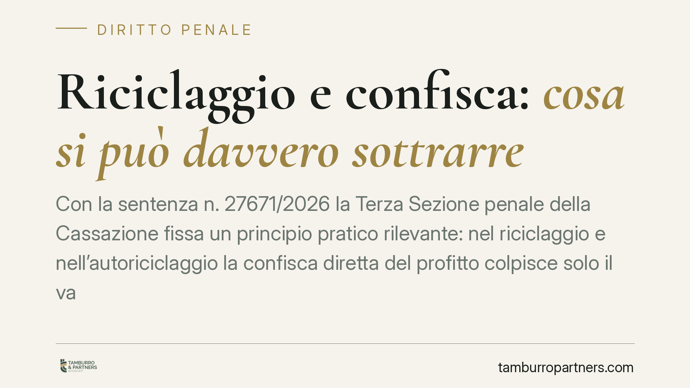

Riciclaggio e confisca: cosa si può davvero sottrarre
Con la sentenza n. 27671/2026 la Terza Sezione penale della Cassazione fissa un principio pratico rilevante: nel riciclaggio e nell'autoriciclaggio la confisca diretta del profitto colpisce solo il vantaggio patrimoniale aggiuntivo che il riciclatore ha effettivamente ricavato, non l'intero capitale ripulito. Quest'ultimo resta profitto del reato presupposto e va aggredito con altri strumenti.

Il caso
La vicenda nasce da un'operazione di reimpiego di somme di provenienza illecita transitate attraverso società per azioni e alcune cosiddette "società cartiere" — entità prive di reale attività, usate per interporre schermi e mascherare l'origine del denaro. La Procura aveva ottenuto un sequestro finalizzato alla confisca esteso all'intero importo movimentato. Il Tribunale del Riesame aveva confermato l'impostazione. La Cassazione, invece, ha annullato, tracciando una distinzione che nella prassi viene spesso trascurata.
Inquadramento normativo
Due sono le norme di riferimento. L'art. 648-bis c.p. punisce il riciclaggio, cioè la condotta di chi sostituisce, trasferisce o ostacola l'identificazione della provenienza di denaro proveniente da un delitto commesso da altri. L'art. 648-ter.1 c.p. disciplina l'autoriciclaggio, quando è lo stesso autore del reato presupposto a reimpiegare i proventi in attività economiche o finanziarie.
Entrambe le fattispecie prevedono la confisca del profitto. Il punto controverso è cosa costituisca "profitto" del reato di riciclaggio, distinto dal profitto del reato che lo ha generato (frode fiscale, corruzione, truffa, e simili).
La Cassazione chiarisce che il capitale ripulito è e resta profitto del reato presupposto. Il profitto del riciclaggio, invece, è solo il vantaggio patrimoniale aggiuntivo che il riciclatore ottiene grazie all'operazione: tipicamente compensi, provvigioni, o l'incremento di valore prodotto dall'attività di reimpiego. Confiscare l'intero importo ripulito significherebbe, in sostanza, colpire due volte lo stesso bene con titoli diversi.
Perché la distinzione conta
La differenza non è teorica. Nella misura in cui la confisca diretta del profitto del riciclaggio viene ancorata al solo vantaggio aggiuntivo, l'ammontare aggredibile può ridursi drasticamente rispetto alle contestazioni iniziali, che tendono a fotografare l'intera massa movimentata.
Questo non significa che il capitale illecito diventi intoccabile. Resta pienamente sequestrabile e confiscabile come profitto del reato presupposto, con i relativi presupposti e in capo ai soggetti responsabili di quel reato. La sentenza incide dunque sul titolo della confisca e sulla sua misura, non sull'aggredibilità in assoluto delle somme.
Per chi si difende, la conseguenza operativa è duplice. Da un lato, occorre verificare che la misura cautelare reale non gonfi il perimetro del sequestro sovrapponendo profitto presupposto e profitto del riciclaggio. Dall'altro, va contestata puntualmente la quantificazione: l'accusa deve individuare quale sia il vantaggio aggiuntivo, con un accertamento specifico e non presuntivo.
Implicazioni pratiche
Per imprese e amministratori coinvolti in operazioni finanziarie complesse, la pronuncia offre un criterio di lettura utile in fase di riesame e nel merito. Il sequestro non può automaticamente estendersi a tutto il denaro transitato: serve una motivazione che distingua le componenti.
È anche un monito sul rischio dei rapporti con entità opache. La presenza di società cartiere nella catena non modifica i principi sulla confisca, ma rende più insidiosa la ricostruzione dei flussi e più aggressive le contestazioni della Procura. La difesa passa dalla capacità di documentare la reale destinazione economica delle somme.
Resta ferma la possibilità, per l'accusa, di ricorrere alla confisca per equivalente su beni di valore corrispondente al profitto, quando quello diretto non sia rintracciabile. Anche in quel caso, però, il parametro di riferimento è il profitto correttamente individuato secondo il criterio indicato dalla Cassazione.
Cosa fare in concreto
- Analizzate il decreto di sequestro e verificate se l'importo aggredito corrisponde al solo vantaggio aggiuntivo del riciclaggio o comprende l'intero capitale ripulito.
- Contestate la quantificazione in sede di riesame, chiedendo che l'accusa distingua profitto del reato presupposto e profitto del riciclaggio.
- Ricostruite i flussi finanziari con documentazione bancaria e contabile, per dimostrare la reale natura delle somme movimentate.
- Valutate la posizione soggettiva: chi risponde solo di riciclaggio non può subire la confisca del profitto altrui a titolo di reato presupposto.
- Attivate una difesa tempestiva: i termini per l'impugnazione delle misure cautelari reali sono brevi e perentori.
Disclaimer
Contributo informativo a cura di Tamburro & Partners - Avv. Giuseppe Tamburro. Non costituisce parere legale.
Ogni condominio ha una storia a sé.
Se gestisci un'amministrazione e vuoi un confronto su una specifica questione condominiale, scrivi allo studio. Ti rispondiamo entro un giorno lavorativo.